Candidate List 20260513 Previous Day Next Day Section 1: New Sources (age<1d) Cosmological Afterglow
Section 2: Old (1-5d) sources observed last night placeholder
Section 1: New Afterglow/FBOT Cands Last Night (1)
1. ZTF26aawiwkv (Afterglow?) [Back to Top] [Share] [Trigger Swift] [Fritz ] [Lasair ]RA, Dec: 198.07797, 46.3975 13h12m18.71s, 46d23m50.99sGalactic (l, b): 112.21113, 70.29382 ext(g-r) = 0.015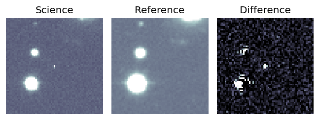
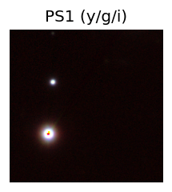
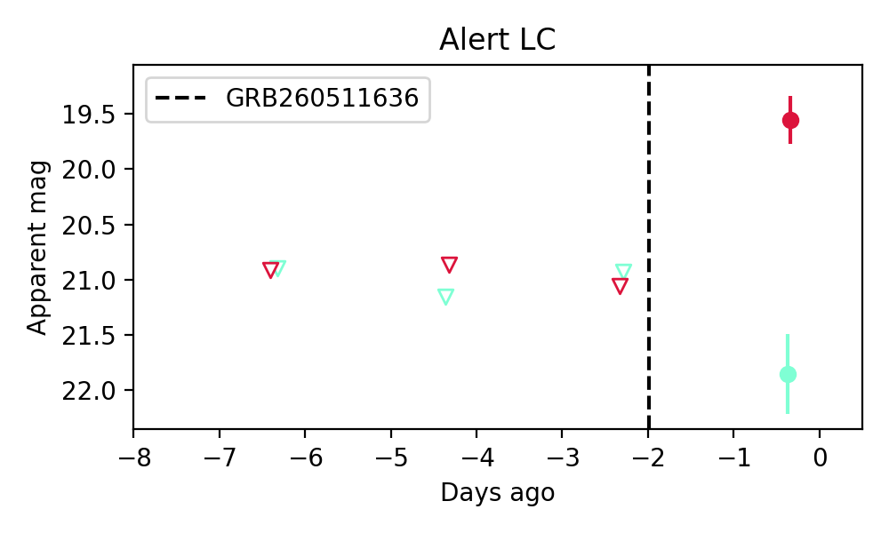
Consistent with synchrotron, g-r>0!
Section 2: Older Sources Observed Last Night (38)
0. ZTF26aauvzgh (Afterglow?) [Back to Top] [Share] [Trigger Swift] [Fritz ] [Lasair ]RA, Dec: 209.79567, 47.25993 13h59m10.96s, 47d15m35.75sGalactic (l, b): 93.99559, 65.8823 ext(g-r) = 0.021peak abs mag = -19.10 PS1: 1 source in 3 arcsec Closest: d = 0.45 arcsec photoz=0.11+/-0.02 peak abs mag = -18.91
1. ZTF26aauxapg (Afterglow?) [Back to Top] [Share] [Trigger Swift] [Fritz ] [Lasair ]RA, Dec: 218.91377, 38.34961 14h35m39.31s, 38d20m58.59sGalactic (l, b): 66.77176, 65.49905 ext(g-r) = 0.012peak abs mag = -19.14 PS1: 1 source in 3 arcsec Closest: d = 0.40 arcsec photoz=0.14+/-0.02 peak abs mag = -19.19
2. ZTF26aauxdkn (Afterglow?FBOT?) [Back to Top] [Share] [Trigger Swift] [Fritz ] [Lasair ]RA, Dec: 252.68983, 22.35518 16h50m45.56s, 22d21m18.64sGalactic (l, b): 41.9269, 35.95084 ext(g-r) = 0.058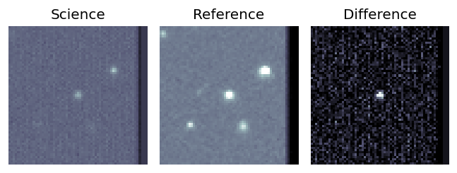
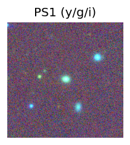
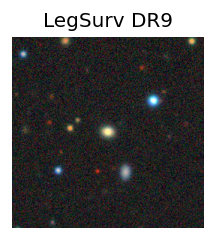
peak abs mag = -19.61 LegacySurvey: 1 sources in 3 arcsec Closest: d = 0.11 arcsec, 10.1 deg (east of north) photoz=0.1 (68% bounds 0.09, 0.11), type=SER peak abs mag = -19.07 (68% bounds -18.81, -19.28) 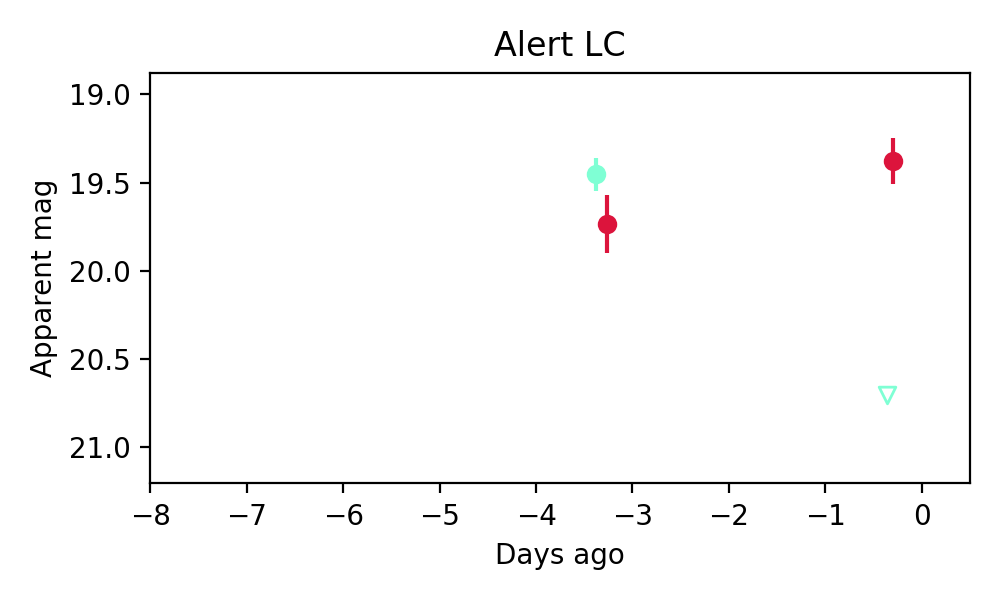
Consistent with synchrotron, g-r>0!
3. ZTF26aauxdop (FBOT?) [Back to Top] [Share] [Trigger Swift] [Fritz ] [Lasair ]RA, Dec: 241.18174, 22.10394 16h 4m43.62s, 22d 6m14.17sGalactic (l, b): 37.39181, 46.04418 ext(g-r) = 0.061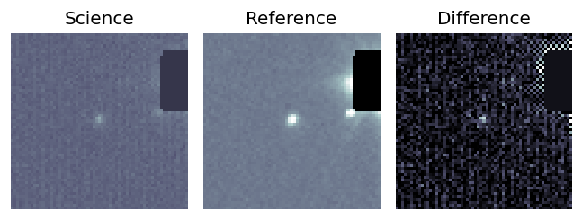
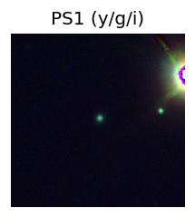
peak abs mag = -20.56 LegacySurvey: 1 sources in 3 arcsec Closest: d = 0.57 arcsec, 304.6 deg (east of north) photoz=0.09 (68% bounds 0.08, 0.11), type=REX peak abs mag = -19.6 (68% bounds -19.33, -19.94) 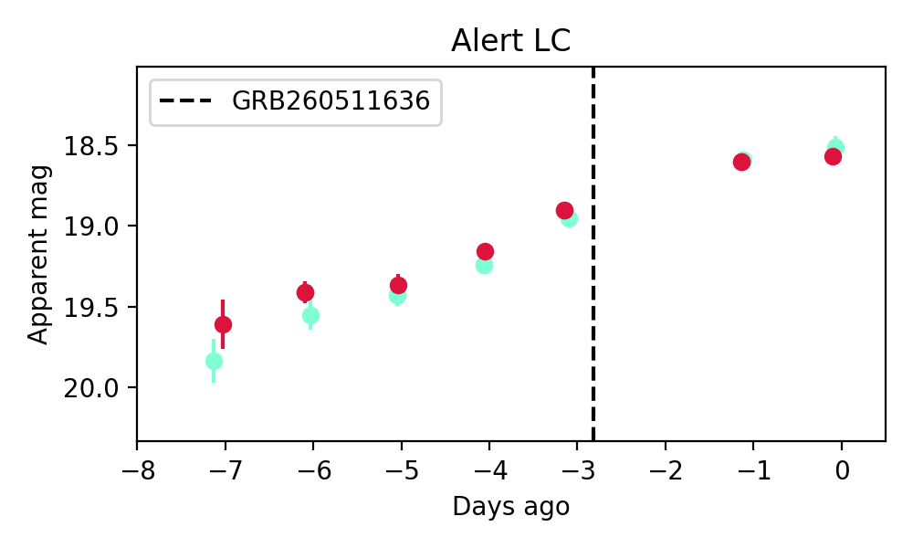
Consistent with synchrotron, g-r>0!
4. ZTF26aauyasl (FBOT?) [Back to Top] [Share] [Trigger Swift] [Fritz ] [Lasair ]RA, Dec: 229.36225, 33.76321 15h17m26.94s, 33d45m47.55sGalactic (l, b): 53.93942, 58.01188 ext(g-r) = 0.022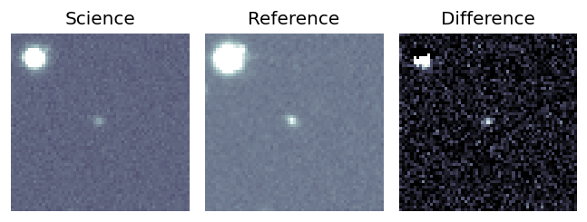
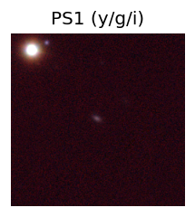
peak abs mag = -19.23 PS1: 1 source in 3 arcsec Closest: d = 0.64 arcsec photoz=0.19+/-0.05 peak abs mag = -20.29 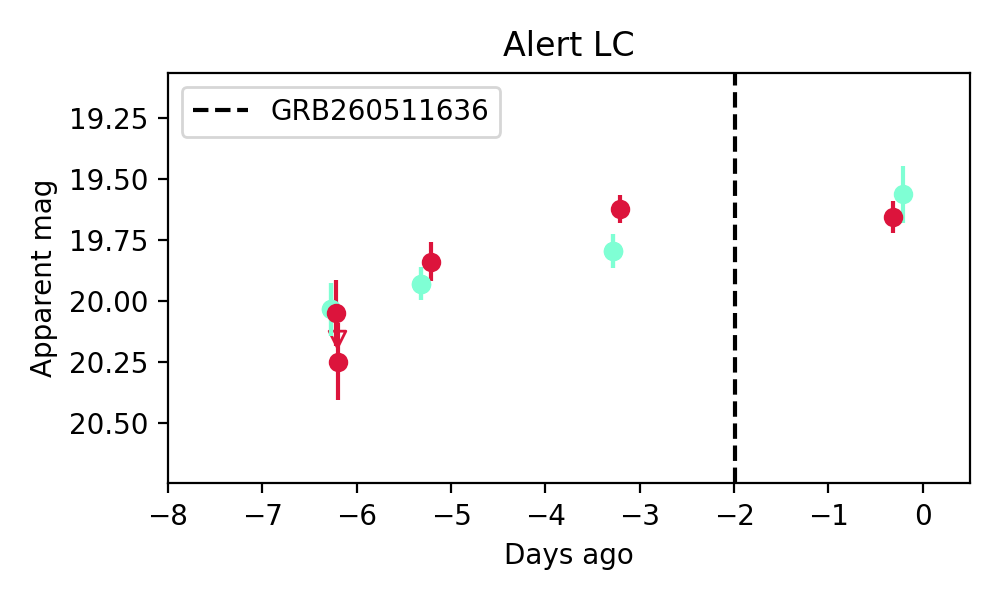
Consistent with synchrotron, g-r>0!
5. ZTF26aauzske (Afterglow?FBOT?) [Back to Top] [Share] [Trigger Swift] [Fritz ] [Lasair ]RA, Dec: 137.30653, 72.88366 9h 9m13.57s, 72d53m1.16sGalactic (l, b): 140.32799, 35.72885 ext(g-r) = 0.035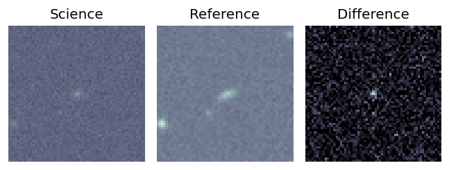
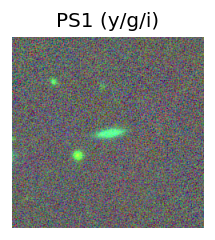
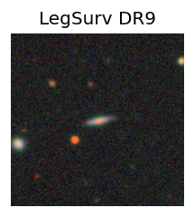
PS1: 1 source in 3 arcsec Closest: d = 0.90 arcsec photoz=0.18+/-0.05 peak abs mag = -20.34 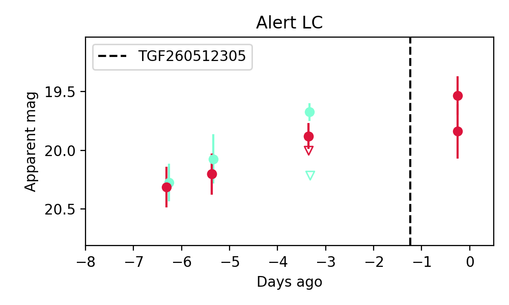
6. ZTF26aavbydp (Afterglow?) [Back to Top] [Share] [Trigger Swift] [Fritz ] [Lasair ]RA, Dec: 216.30911, 7.76774 14h25m14.19s, 7d46m3.85sGalactic (l, b): 356.20378, 60.53099 ext(g-r) = 0.025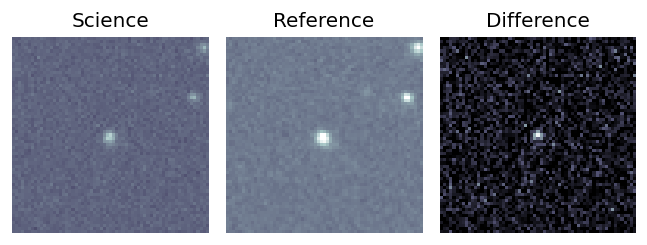
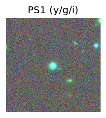
peak abs mag = -18.98 LegacySurvey: 1 sources in 3 arcsec Closest: d = 0.86 arcsec, 154.4 deg (east of north) photoz=0.13 (68% bounds 0.11, 0.15), type=REX peak abs mag = -19.01 (68% bounds -18.55, -19.32) 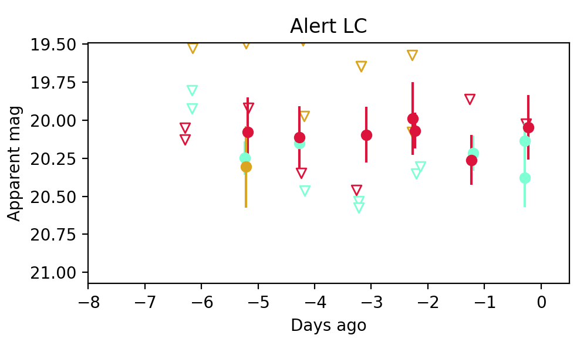
Consistent with synchrotron, g-r>0!
7. ZTF26aavbyhm (Afterglow?FBOT?) [Back to Top] [Share] [Trigger Swift] [Fritz ] [Lasair ]RA, Dec: 222.84002, 14.61627 14h51m21.61s, 14d36m58.57sGalactic (l, b): 14.87881, 59.43129 ext(g-r) = 0.026peak abs mag = -20.22 LegacySurvey: 1 sources in 3 arcsec Closest: d = 0.66 arcsec, 256.5 deg (east of north) photoz=0.14 (68% bounds 0.13, 0.16), type=PSF peak abs mag = -19.63 (68% bounds -19.44, -19.84)
8. ZTF26aavedji (FBOT?) [Back to Top] [Share] [Trigger Swift] [Fritz ] [Lasair ]RA, Dec: 209.30404, -17.25626 13h57m12.97s, -17d-15m-22.53sGalactic (l, b): 324.56518, 42.83542 WARNING: -4.95 deg from ecliptic plane ext(g-r) = 0.089LegacySurvey: 1 sources in 3 arcsec Closest: d = 0.47 arcsec, 276.0 deg (east of north) photoz=0.11 (68% bounds 0.1, 0.13), type=SER peak abs mag = -19.81 (68% bounds -19.47, -20.09) Consistent with synchrotron, g-r>0!
9. ZTF26aaveiqd (Afterglow?) [Back to Top] [Share] [Trigger Swift] [Fritz ] [Lasair ]RA, Dec: 276.90183, 7.40283 18h27m36.44s, 7d24m10.19sGalactic (l, b): 36.86065, 8.64755 ext(g-r) = 0.255
10. ZTF26aaveyho (Afterglow?) [Back to Top] [Share] [Trigger Swift] [Fritz ] [Lasair ]RA, Dec: 233.98178, 8.73671 15h35m55.63s, 8d44m12.14sGalactic (l, b): 15.48241, 47.04732 ext(g-r) = 0.044peak abs mag = -17.13
11. ZTF26aavfdzh (Afterglow?) [Back to Top] [Share] [Trigger Swift] [Fritz ] [Lasair ]RA, Dec: 279.99628, -7.63979 18h39m59.11s, -7d-38m-23.23sGalactic (l, b): 24.83123, -0.94881 ext(g-r) = 4.149PS1: 1 source in 3 arcsec Closest: d = 0.15 arcsec photoz=0.40+/-0.03 peak abs mag = -30.36
12. ZTF26aavgmiw (Afterglow?) [Back to Top] [Share] [Trigger Swift] [Fritz ] [Lasair ]RA, Dec: 201.76085, 60.31026 13h27m2.60s, 60d18m36.92sGalactic (l, b): 114.99936, 56.26625 ext(g-r) = 0.019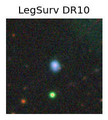
peak abs mag = -18.48 PS1: 1 source in 3 arcsec Closest: d = 0.73 arcsec photoz=0.09+/-0.02 peak abs mag = -18.33 Consistent with synchrotron, g-r>0!
13. ZTF26aavgnym (Afterglow?FBOT?) [Back to Top] [Share] [Trigger Swift] [Fritz ] [Lasair ]RA, Dec: 191.74013, 44.40317 12h46m57.63s, 44d24m11.41sGalactic (l, b): 125.62221, 72.70169 ext(g-r) = 0.024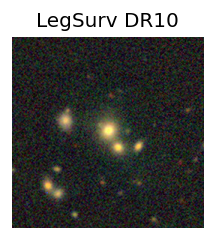
peak abs mag = -19.95 PS1: 1 source in 3 arcsec Closest: d = 0.66 arcsec photoz=0.19+/-0.01 peak abs mag = -19.95 Consistent with synchrotron, g-r>0!
14. ZTF26aavguzr (Afterglow?) [Back to Top] [Share] [Trigger Swift] [Fritz ] [Lasair ]RA, Dec: 209.91639, 5.83765 13h59m39.93s, 5d50m15.53sGalactic (l, b): 343.30874, 63.22808 ext(g-r) = 0.031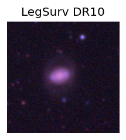
peak abs mag = -19.26 peak abs mag = -18.98 LegacySurvey: 1 sources in 3 arcsec Closest: d = 2.27 arcsec, 70.0 deg (east of north) photoz=0.1 (68% bounds 0.08, 0.11), type=SER peak abs mag = -19.28 (68% bounds -18.89, -19.59)
15. ZTF26aavilqo (Afterglow?) [Back to Top] [Share] [Trigger Swift] [Fritz ] [Lasair ]RA, Dec: 225.20981, 1.33864 15h 0m50.36s, 1d20m19.09sGalactic (l, b): 358.67597, 49.66757 ext(g-r) = 0.054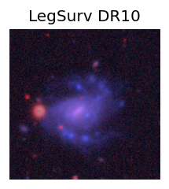
peak abs mag = -17.82 LegacySurvey: 1 sources in 3 arcsec Closest: d = 4.51 arcsec, 137.5 deg (east of north) photoz=0.03 (68% bounds 0.02, 0.03), type=SER peak abs mag = -17.31 (68% bounds -16.87, -17.72)
16. ZTF26aavjzlw (Afterglow?) [Back to Top] [Share] [Trigger Swift] [Fritz ] [Lasair ]RA, Dec: 234.4439, 37.98952 15h37m46.54s, 37d59m22.26sGalactic (l, b): 61.00583, 53.64053 ext(g-r) = 0.016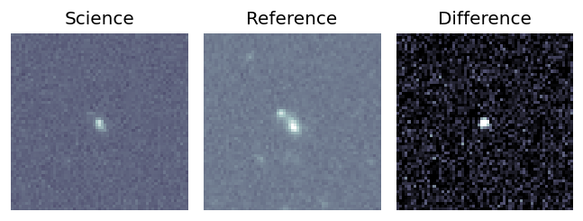
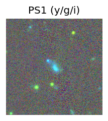
peak abs mag = -17.71 PS1: 1 source in 3 arcsec Closest: d = 1.73 arcsec photoz=0.05+/-0.04 peak abs mag = -17.19 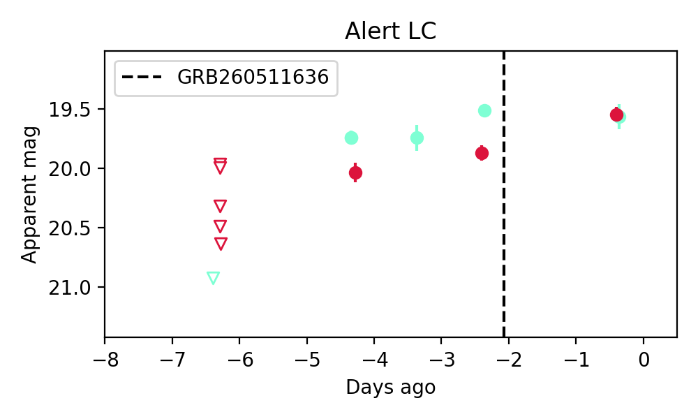
Consistent with synchrotron, g-r>0!
17. ZTF26aavlgre (FBOT?) [Back to Top] [Share] [Trigger Swift] [Fritz ] [Lasair ]RA, Dec: 253.93275, 30.49786 16h55m43.86s, 30d29m52.31sGalactic (l, b): 52.06492, 37.03738 ext(g-r) = 0.036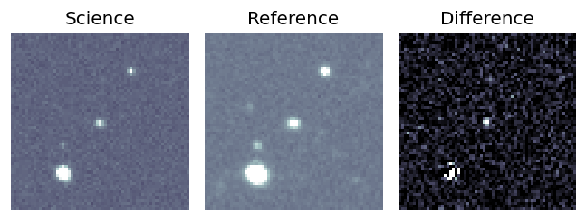
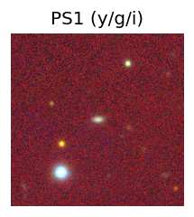
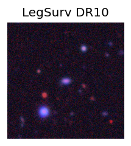
peak abs mag = -19.77 LegacySurvey: 1 sources in 3 arcsec Closest: d = 0.44 arcsec, 192.4 deg (east of north) photoz=0.1 (68% bounds 0.08, 0.13), type=SER peak abs mag = -19.22 (68% bounds -18.74, -19.69) 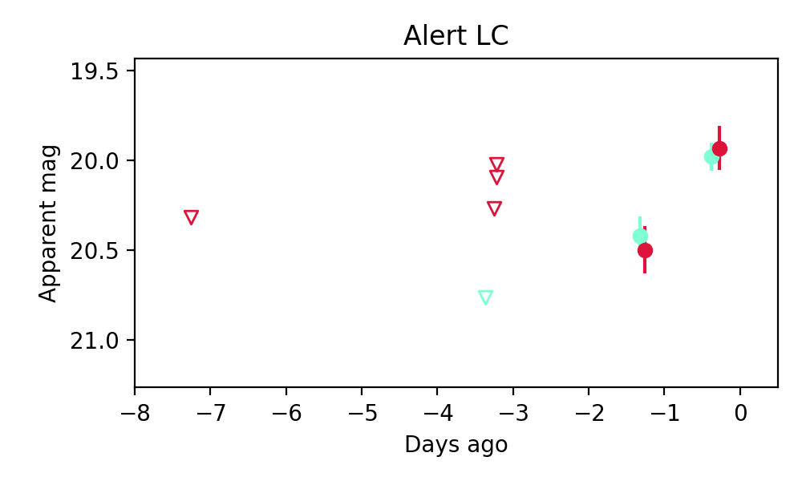
18. ZTF26aavlhox (FBOT?) [Back to Top] [Share] [Trigger Swift] [Fritz ] [Lasair ]RA, Dec: 245.61541, 9.58425 16h22m27.70s, 9d35m3.30sGalactic (l, b): 23.95974, 37.37528 ext(g-r) = 0.053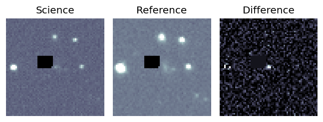
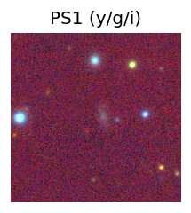
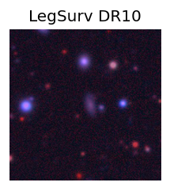
peak abs mag = -20.62 LegacySurvey: 1 sources in 3 arcsec Closest: d = 2.33 arcsec, 267.0 deg (east of north) photoz=0.16 (68% bounds 0.13, 0.2), type=SER peak abs mag = -19.59 (68% bounds -19.06, -20.18) 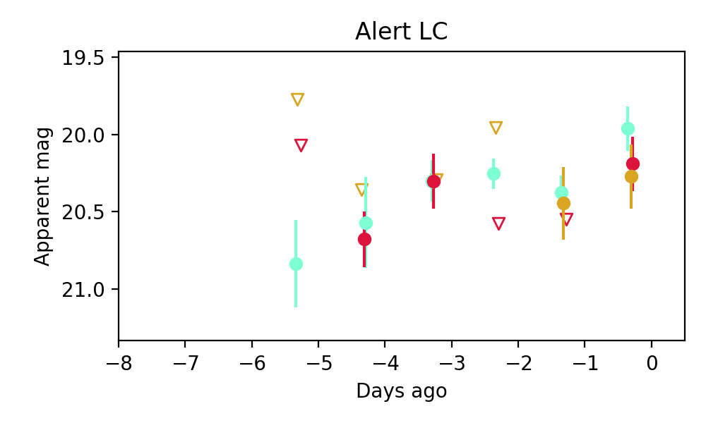
Consistent with synchrotron, g-r>0!
19. ZTF26aavmuel (FBOT?) [Back to Top] [Share] [Trigger Swift] [Fritz ] [Lasair ]RA, Dec: 155.19101, 8.64257 10h20m45.84s, 8d38m33.27sGalactic (l, b): 233.20011, 49.90702 WARNING: -1.56 deg from ecliptic plane ext(g-r) = 0.037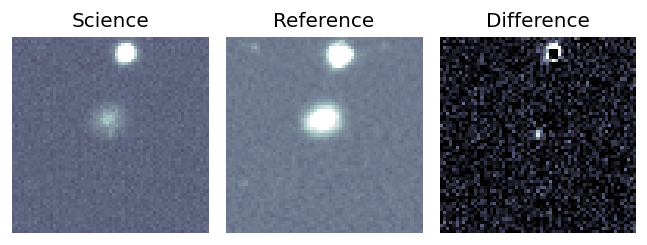
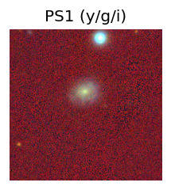
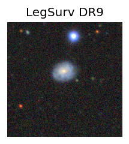
peak abs mag = -18.56 LegacySurvey: 1 sources in 3 arcsec Closest: d = 1.86 arcsec, 39.2 deg (east of north) photoz=0.14 (68% bounds 0.03, 0.21), type=EXP peak abs mag = -19.61 (68% bounds -16.35, -20.69) 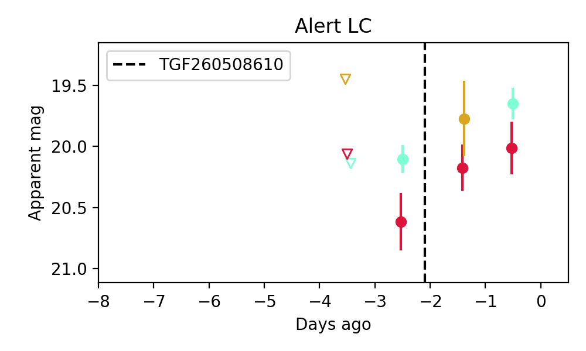
Consistent with synchrotron, g-r>0!
20. ZTF26aavqbzd (FBOT?) [Back to Top] [Share] [Trigger Swift] [Fritz ] [Lasair ]RA, Dec: 206.76805, -1.72251 13h47m4.33s, -1d-43m-21.03sGalactic (l, b): 330.04933, 58.18963 ext(g-r) = 0.044peak abs mag = -20.65 LegacySurvey: 1 sources in 3 arcsec Closest: d = 0.40 arcsec, 292.0 deg (east of north) photoz=0.14 (68% bounds 0.12, 0.19), type=SER peak abs mag = -19.77 (68% bounds -19.29, -20.47) Consistent with synchrotron, g-r>0!
21. ZTF26aavqdbg (Afterglow?) [Back to Top] [Share] [Trigger Swift] [Fritz ] [Lasair ]RA, Dec: 203.39262, -20.63455 13h33m34.23s, -20d-38m-4.38sGalactic (l, b): 316.0661, 41.1602 ext(g-r) = 0.087
22. ZTF26aavrsod (Afterglow?) [Back to Top] [Share] [Trigger Swift] [Fritz ] [Lasair ]RA, Dec: 242.92378, -24.06626 16h11m41.71s, -24d-3m-58.53sGalactic (l, b): 350.94051, 19.61509 WARNING: -2.91 deg from ecliptic plane ext(g-r) = 0.27
23. ZTF26aavrvex (FBOT?) [Back to Top] [Share] [Trigger Swift] [Fritz ] [Lasair ]RA, Dec: 230.06446, 1.52622 15h20m15.47s, 1d31m34.40sGalactic (l, b): 3.62156, 46.11633 ext(g-r) = 0.054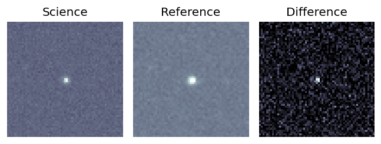
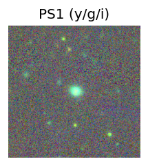
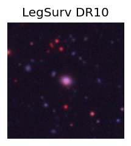
peak abs mag = -19.70 LegacySurvey: 1 sources in 3 arcsec Closest: d = 0.42 arcsec, 235.3 deg (east of north) photoz=0.1 (68% bounds 0.1, 0.11), type=SER peak abs mag = -18.83 (68% bounds -18.65, -19.01) 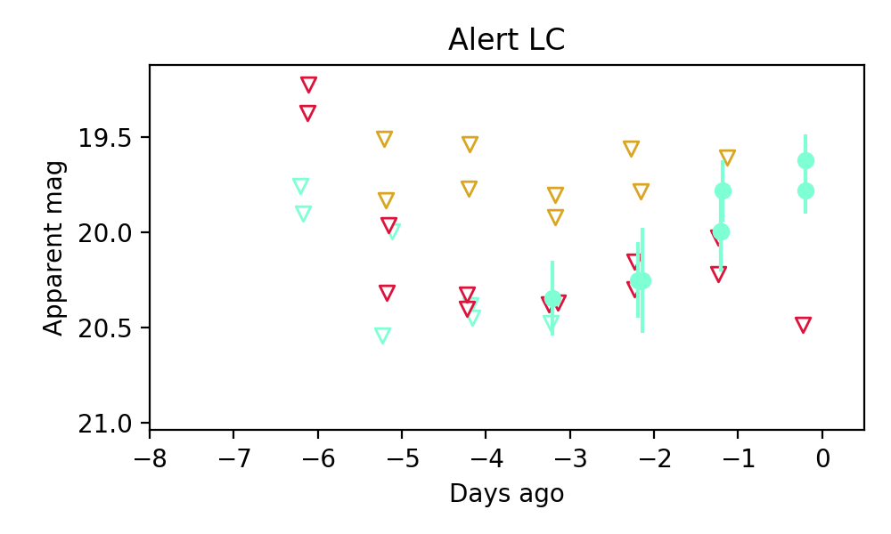
24. ZTF26aavwktm (Afterglow?FBOT?) [Back to Top] [Share] [Trigger Swift] [Fritz ] [Lasair ]RA, Dec: 240.7095, 56.92329 16h 2m50.28s, 56d55m23.86sGalactic (l, b): 87.97354, 45.07582 ext(g-r) = 0.02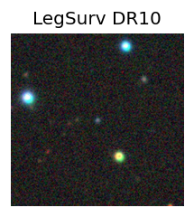
peak abs mag = -21.92 PS1: 1 source in 3 arcsec Closest: d = 0.43 arcsec photoz=0.54+/-0.24 peak abs mag = -22.72
25. ZTF26aawampy (Afterglow?) [Back to Top] [Share] [Trigger Swift] [Fritz ] [Lasair ]RA, Dec: 231.03995, 8.68082 15h24m9.59s, 8d40m50.94sGalactic (l, b): 13.13131, 49.49931 ext(g-r) = 0.036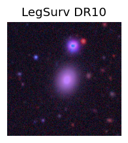
peak abs mag = -17.66 LegacySurvey: 1 sources in 3 arcsec Closest: d = 1.85 arcsec, 248.7 deg (east of north) photoz=0.04 (68% bounds 0.03, 0.05), type=SER peak abs mag = -17.52 (68% bounds -16.86, -17.91) Consistent with synchrotron, g-r>0!
26. ZTF26aawfnjg (FBOT?) [Back to Top] [Share] [Trigger Swift] [Fritz ] [Lasair ]RA, Dec: 204.17665, 47.07679 13h36m42.40s, 47d 4m36.44sGalactic (l, b): 101.88017, 68.15816 ext(g-r) = 0.02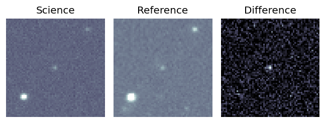
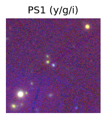
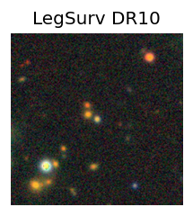
peak abs mag = -20.33 PS1: 1 source in 3 arcsec Closest: d = 0.17 arcsec photoz=0.33+/-0.13 peak abs mag = -20.70 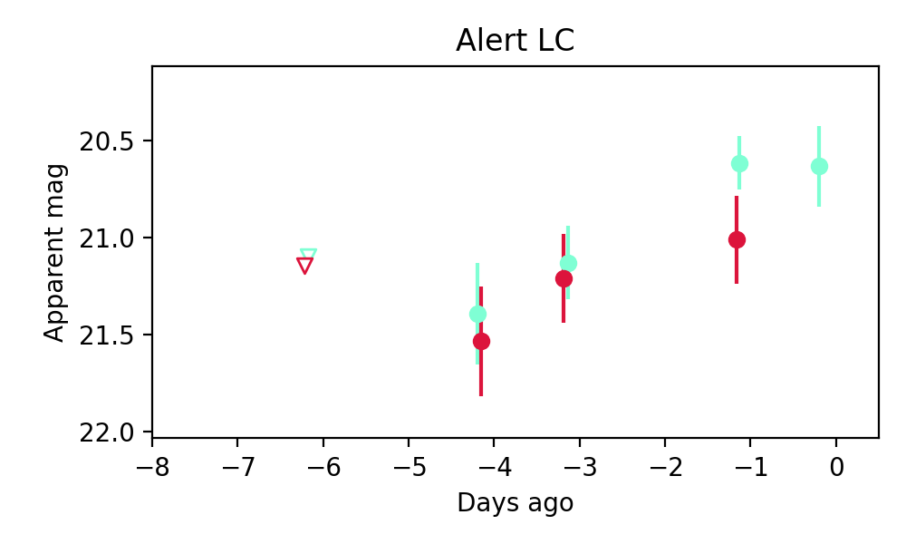
27. ZTF26aawgeif (Afterglow?) [Back to Top] [Share] [Trigger Swift] [Fritz ] [Lasair ]RA, Dec: 259.87719, -13.77216 17h19m30.52s, -13d-46m-19.76sGalactic (l, b): 9.64784, 13.23528 ext(g-r) = 0.498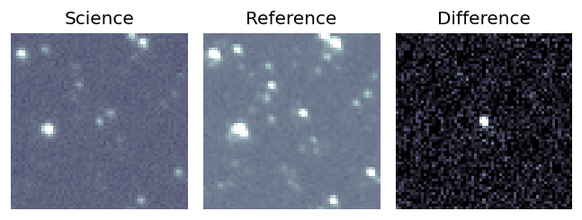
Consistent with synchrotron, g-r>0!
28. ZTF26aawiggz (FBOT?) [Back to Top] [Share] [Trigger Swift] [Fritz ] [Lasair ]RA, Dec: 184.07966, 12.07823 12h16m19.12s, 12d 4m41.63sGalactic (l, b): 272.53506, 72.84332 ext(g-r) = 0.031peak abs mag = -18.62 LegacySurvey: 1 sources in 3 arcsec Closest: d = 1.15 arcsec, 10.6 deg (east of north) photoz=0.4 (68% bounds 0.12, 1.08), type=EXP peak abs mag = -20.27 (68% bounds -17.45, -22.91)
29. ZTF26aawilbg (Afterglow?) [Back to Top] [Share] [Trigger Swift] [Fritz ] [Lasair ]RA, Dec: 216.72869, 14.37218 14h26m54.88s, 14d22m19.85sGalactic (l, b): 7.90365, 64.36678 ext(g-r) = 0.019LegacySurvey: 1 sources in 3 arcsec Closest: d = 0.23 arcsec, 177.1 deg (east of north) photoz=0.51 (68% bounds 0.45, 0.65), type=PSF peak abs mag = -22.07 (68% bounds -21.75, -22.7)
30. ZTF26aawilct (FBOT?) [Back to Top] [Share] [Trigger Swift] [Fritz ] [Lasair ]RA, Dec: 212.36841, 14.40156 14h 9m28.42s, 14d24m5.63sGalactic (l, b): 1.85511, 67.81097 ext(g-r) = 0.021LegacySurvey: 1 sources in 3 arcsec Closest: d = 1.55 arcsec, 355.1 deg (east of north) photoz=0.46 (68% bounds 0.37, 0.64), type=REX peak abs mag = -22.05 (68% bounds -21.52, -22.91) Consistent with synchrotron, g-r>0!
31. ZTF26aawiqie (FBOT?) [Back to Top] [Share] [Trigger Swift] [Fritz ] [Lasair ]RA, Dec: 172.16894, -10.61667 11h28m40.55s, -10d-37m-0.02sGalactic (l, b): 272.16159, 47.25015 ext(g-r) = 0.043LegacySurvey: 1 sources in 3 arcsec Closest: d = 0.84 arcsec, 234.9 deg (east of north) photoz=0.18 (68% bounds 0.17, 0.2), type=SER peak abs mag = -19.72 (68% bounds -19.56, -19.91) Consistent with synchrotron, g-r>0!
32. ZTF26aawizaq (FBOT?) [Back to Top] [Share] [Trigger Swift] [Fritz ] [Lasair ]RA, Dec: 185.04287, 29.71216 12h20m10.29s, 29d42m43.78sGalactic (l, b): 190.50048, 82.65804 ext(g-r) = 0.024LegacySurvey: 1 sources in 3 arcsec Closest: d = 2.14 arcsec, 110.0 deg (east of north) photoz=0.16 (68% bounds 0.02, 0.79), type=PSF peak abs mag = -19.66 (68% bounds -15.22, -23.63)
33. ZTF26aawjerw (FBOT?) [Back to Top] [Share] [Trigger Swift] [Fritz ] [Lasair ]RA, Dec: 185.55158, 6.94984 12h22m12.38s, 6d56m59.43sGalactic (l, b): 282.6278, 68.66147 ext(g-r) = 0.022peak abs mag = -19.54 LegacySurvey: 1 sources in 3 arcsec Closest: d = 1.25 arcsec, 133.3 deg (east of north) photoz=0.25 (68% bounds 0.22, 0.29), type=REX peak abs mag = -19.85 (68% bounds -19.54, -20.18)
34. ZTF26aawjxdf (Afterglow?) [Back to Top] [Share] [Trigger Swift] [Fritz ] [Lasair ]RA, Dec: 245.41324, 57.31897 16h21m39.18s, 57d19m8.31sGalactic (l, b): 87.35934, 42.53069 ext(g-r) = 0.011peak abs mag = -18.03 PS1: 1 source in 3 arcsec Closest: d = 3.14 arcsec photoz=0.06+/-0.01 peak abs mag = -17.62 Consistent with synchrotron, g-r>0!
35. ZTF26aawkddj (FBOT?) [Back to Top] [Share] [Trigger Swift] [Fritz ] [Lasair ]RA, Dec: 243.56017, -15.86332 16h14m14.44s, -15d-51m-47.97sGalactic (l, b): 357.93903, 24.68224 ext(g-r) = 0.206LegacySurvey: 1 sources in 3 arcsec Closest: d = 3.83 arcsec, 115.7 deg (east of north) photoz=0.1 (68% bounds 0.04, 0.45), type=PSF peak abs mag = -19.15 (68% bounds -16.96, -22.72)
36. ZTF26aawkqpc (Afterglow?) [Back to Top] [Share] [Trigger Swift] [Fritz ] [Lasair ]RA, Dec: 272.03823, 24.7713 18h 8m9.18s, 24d46m16.68sGalactic (l, b): 51.2448, 20.0459 ext(g-r) = 0.124 Consistent with synchrotron, g-r>0!
37. ZTF26aawkrmu (Afterglow?) [Back to Top] [Share] [Trigger Swift] [Fritz ] [Lasair ]RA, Dec: 266.93314, 18.13218 17h47m43.95s, 18d 7m55.84sGalactic (l, b): 42.74488, 21.9621 ext(g-r) = 0.068LegacySurvey: 1 sources in 3 arcsec Closest: d = 4.38 arcsec, 1.9 deg (east of north) photoz=0.04 (68% bounds 0.03, 0.06), type=SER peak abs mag = -16.11 (68% bounds -15.58, -16.71) Consistent with synchrotron, g-r>0!